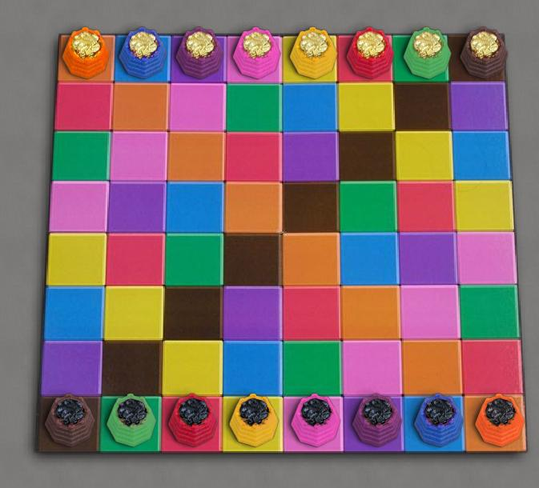

Gyges |
|
Octiles |
| Register |
Log in and Play |
Guest Login |
КамисадоКамисадо это гоночная игра с обратной связью ходов. Побеждает игрок, первым достигший противоположной стороны доски. Цвет клетки, на которой ваш противник закончил свой ход, определяет фигуру, которой вы должны ходить. С первого взгляда это кажется запутанным, но как только вы научитесь просчитывать ситуацию на один ход вперёд, начнёт вырисовываться стратегия. Примечания к правилам: Правила игры заблокированными фигурами самые тонкие и чаще всего истолковываются неверно.
Боты: Они кажутся довольно сильными, просто потому что предугадывание очень непривычно для людей. |
 |
| Kamisado
rankings at Boardspace |
Kamisado
at BoardGameGeek |
| Kamisado game
archives at Boardspace |
Kamisado Official home
page |
| Kamisado
win/loss database |
Kamisado
Official Rules (pdf) |
|
|
Site Map |
Go to BoardSpace.net home page |